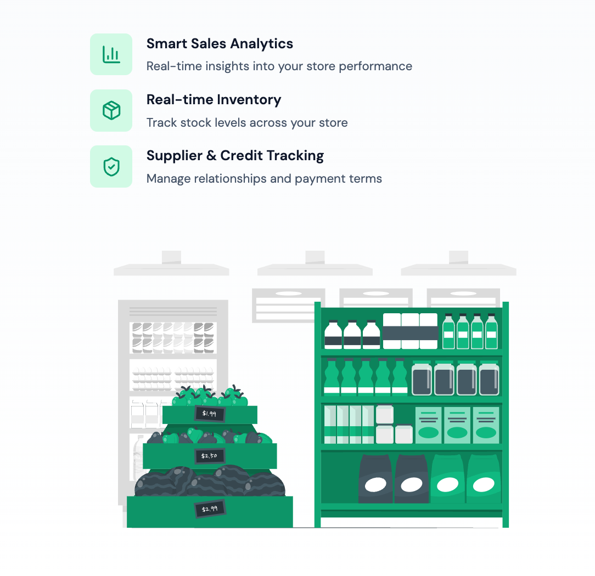
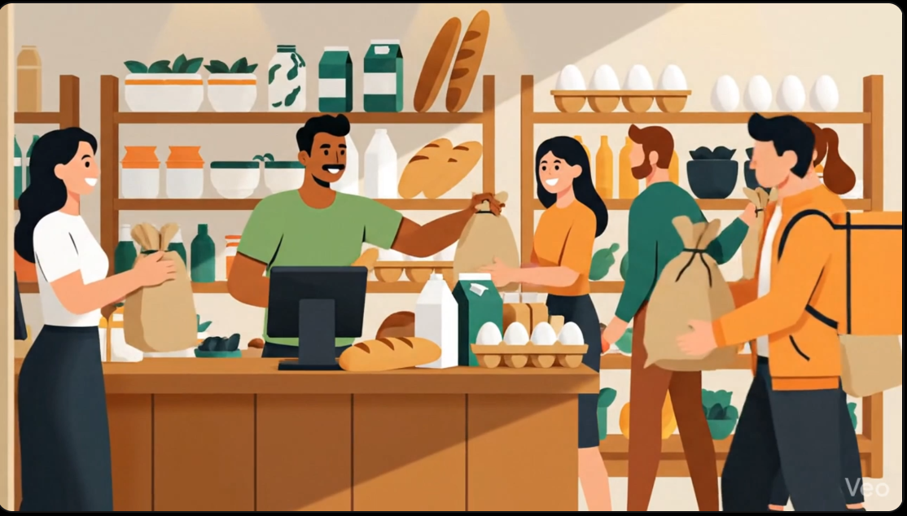

Aanchal Routela
Aspiring AI Product Manager
About Me
Skills & Expertise
Skills
Tools
Tech Skills
Featured Projects
Click "Flip Card" to examine project details, or click "Deep Dive & PDF" to access full documentation.

Sonik: Smart Retail Management System (view)
Owned the end-to-end product lifecycle for a 5-member Agile team, from problem discovery and user research through product requirements, prioritization, sprint execution, and user feedback across 5 milestones.
Product Impact & Scope
- Conducted semi-structured user research across store owners, managers, and cashiers, translating pain points into 25+ SMART user stories.
- Shaped natural-language AI assistant capabilities against live retail databases with built-in safety checks.
- Drove feedback-led product iteration including integrated payments and automated reports.

Grocery Gateway: Unrevealing the Market Mastery of Vinod Store (view)
Conducted end-to-end business analysis of a small-format grocery retailer, examining operational, sales, inventory, credit, and seasonal data to identify high-impact business problems and product opportunities.
Insights & Strategy
- Identified critical pain points including inventory misplacement, credit tracking deficits, and seasonal sales swings.
- Translated analytical models into structured product recommendations around visibility and credit management.
- Converted raw data into actionable decision-support frameworks for small business stakeholders.

Virtual Teaching Assistant (view)
Built a retrieval-augmented Q&A API for the Tools in Data Science course, combining a scraped knowledge base of course pages and forum discussions with an LLM-powered generation pipeline exposed as a REST endpoint for automated evaluation.
Product Impact & Scope
- Aggregated and chunked 4,000+ Discourse forum posts and 380+ course website pages into a structured, embeddings-based knowledge base.
- Designed a cosine-similarity retrieval pipeline with adjacent-chunk context enrichment to ground LLM-generated answers with cited source links.
- Exposed a multimodal REST API supporting text and image inputs, built for automated rubric-based evaluation.
Education
Indian Institute of Technology Madras
Bachelors in Data Science and Applications
Chennai, Tamil Nadu
Panchsheel Public School
Intermediate & Matriculation (CBSE)
Delhi, India
Certifications
SQL (Intermediate)
HackerRank
Product Management Virtual Experience
Forage